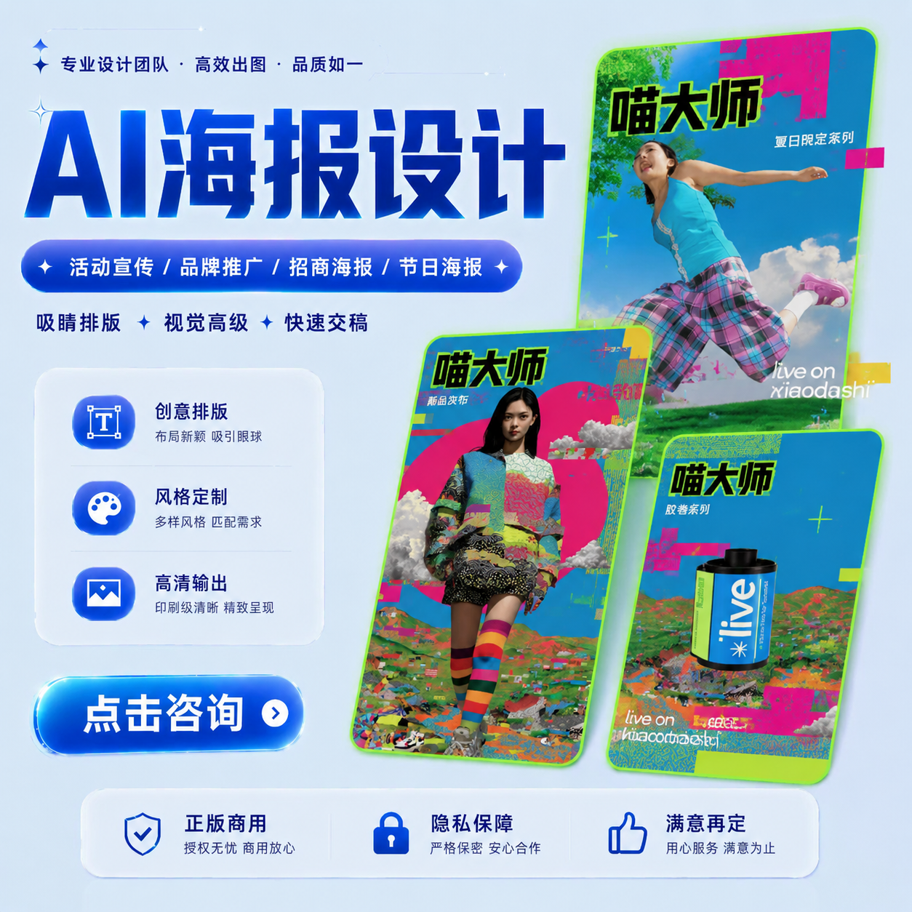
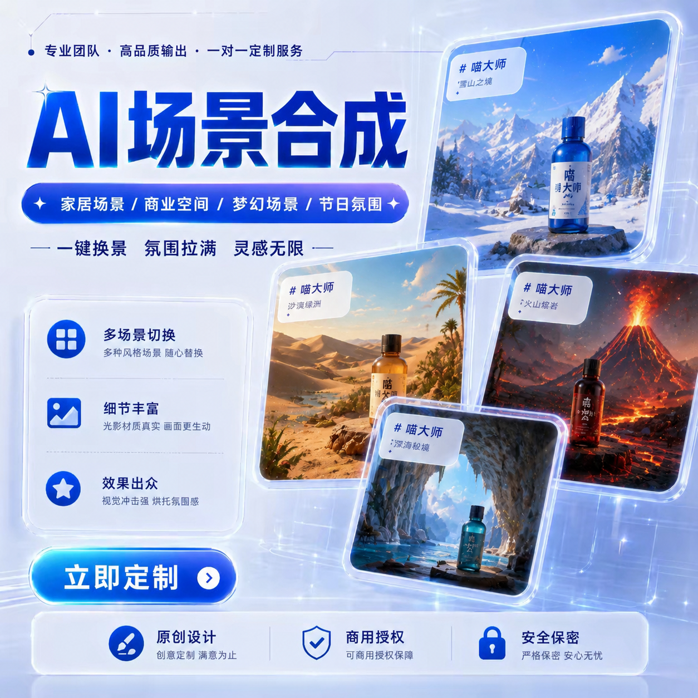

AI ポスターデザインイベント告知・ブランド施策・季節ビジュアル
EC とエンターテインメント向けのビジュアル参考例です。各カードでは、このリポジトリで実行できる手順、ベストエフォートの生成、外部ツールが必要な工程を分けて示します。
ご提供いただいた四つのキャンペーンカバーをリポジトリ内に保存し、外部画像ホストに依存しない参照素材にしました。


元のキャンペーンアートには中国語のデザインテキストを残しています。この言語版では、ページ上のラベル、代替テキスト、メタデータ、シナリオ説明を日本語化しています。
公開ビジュアルは miaodashi.com の参考作品です。すべての工程がこのリポジトリで自動化されていることを示すものではありません。

承認済みの商品画像から展示または広告クリップを計画し、既存の動画クライアントでショットごとに生成します。台詞、口パク、字幕、最終編集は外部工程です。

比較計画とプロンプト主導の画像編集を記録できます。マスク API はないため、正確な消去や分割画面合成を確定的機能としては扱いません。

listing-kit はメイン、構造、素材、シーン、パッケージを別タスクに分けます。価格、仕様、法務文言、最終タイポグラフィは確定的なデザインツールで追加します。

複数の参考画像と汎用 image-to-image でスタイル探索はできます。ただし専用 faceswap、顔同一性保証、Deepfake のパイプラインではありません。本人の同意と全件確認が必要です。
タスク送信、状態確認、ダウンロード、dry-run、ローカル計画、承認、派発記録、QA 記録。
汎用 image-to-image を使う補正、物体削除、顔変換。
マスク編集、確定的な文字組み、口パク、並列実行、公開、チーム管理。